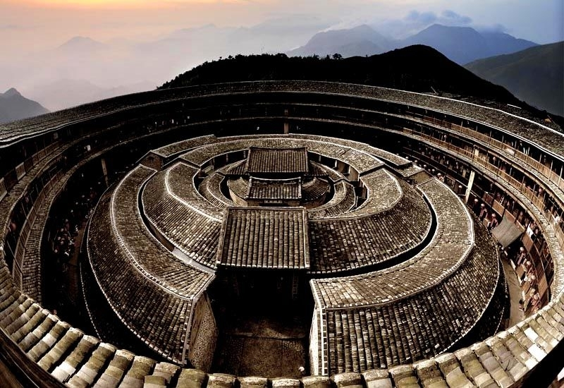

很高兴，田螺坑还没被钢筋水泥淹没，进村公路、村里小道、土楼周边，依旧还是密密麻麻的石子路。孩子们依然可以从石板路裸露的大地闻到泥土的芬芳；狗儿们依然可以在泥巴路上上串下跳。振昌楼的楼边，村里新建了足以和城市公共卫生间媲美的现代化公共卫生间。保原生、弃糟粕，田螺坑做的还真不错。
土墙、石头、解放鞋，怎的就想起了那个渐行渐远的院子。岁月残酷，心地再柔软再善良的人，历经沧桑，都会被磨练得如石坚固、似时光冷酷。
喜欢振昌楼，还因为楼前那片无比开阔的原野，已是深冬，山边两株大树却依旧秋意浓浓。琢磨着明儿清晨不管多远，要去看看这两棵树啥来头。次晨，几个土楼随意一转，就到了去东倒西歪的出发时间，只好作罢。
傍晚与团员在楼前，欣赏雨后云海，闽南连日不断的大雨，让人懊恼，张姐一句话，拨开了心雾：“或许这样的雨天，就是南靖土楼的本来面目”。可不，上天向你关掉了一扇窗，必定会为你打开另一扇窗。在路上，随遇而安的心态很重要。
|  |
上楼前想着：蜘蛛爬满黑房梁、剁剁脚尘土飞扬、伸手难见五指、走起路来吱吱响。还好比预想的强很多，每晚六十元房费很合理（次日才知，三楼也有客房，不仅头顶没人走动，还有电视看，因未预订被临时安排在二楼）。到土楼旅行，建议在土楼住一晚，谁敢保证，若干年后，土楼不会成为只可远观、不可靠近的博物馆，东倒西歪已禁止游客登楼。
睡前发现过道窗户没窗帘。行李都寄存在厦门酒店，手边连张地图都没有，左思右想，想了个好办法：先在靠窗床上铺好餐巾纸，拉开捷信脚管，将全开的雨伞牢牢撑在窗户上（回京后，亲看到手机拍摄的：脚架+雨伞=窗帘照，狂笑）。靠山的墙上有个三十公分的小窗，可不想小动物们进来串门，关。
夜深了，楼下锅碗瓢盆声、打招呼声、上楼脚步声也渐渐淡去。原本，还能清晰无比的听到隔壁夫妻对话，也不知何时停了。没人大声喧哗，偶尔出来进去，都是轻声细语。小楼，很安详、很宁静。往深了想，这个深夜里咳个嗽，恨不得全楼人都听得清楚的地方，若是邻居间发生点矛盾、情侣说个情话、夫妻斗个狠嘴，那可真是一点隐私都没有。这里，故事一定不少。
舍不得错过田螺坑的清晨，五点半准时醒来，窗外漆黑一片、周遭寂静无声，没有鸡叫，也没有木门吱吱作响。一边睁眼盼天亮，一边期待振昌楼发出的第一个声音，会是一声咳嗽吗？不知道过了多久，隐隐约约听到，楼下有挲挲作响的声音，终于，一个很轻的脚步声响起，有人起床了。蹑手蹑脚爬起来，带着机器脚架出门。土楼还在沉睡，小辉妈妈又在忙碌了。振昌楼，新的一天又将开始。